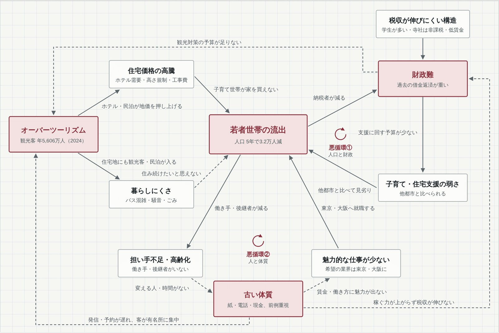

京都ラボ ／ 京都の日常
若者世帯の流出、財政難、古い体質、オーバーツーリズム。京都の4つの課題を1枚の因果の図にすると、2つの悪循環が見えてくる。
京都4課題の因果マップ
京都ラボの最終目標
京都で生まれた人が、京都に住み続けたいと思う環境をつくる。
そのために解決したい課題は4つです。
一番多くの矢印が集まる課題です。財政難とも古い体質とも輪になって、互いを悪くしています。流出を止めることは、最終目標そのものと重なります。
地価の上昇と暮らしにくさの2つの道で、流出を早めています。
仕事・観光・税収の3方向に矢印が出ている起点で、4つの課題の中で京都ラボが一番直接さわれます。住宅価格や税の仕組みは行政の仕事なので、そこは任せます。

図の見方
矢印は「AがBを悪くする」という意味です。実線は市の資料や報道で指摘されている因果、破線はまだ確かめていない仮説です。
悪循環とは、矢印をたどると元の場所に戻ってくる輪のこと。外から手を入れない限り、悪くなり続けます。
悪循環①（人口と財政）
流出で納税者が減る → 財政が苦しくなる → 子育て・住宅支援に予算を回せない → さらに流出する
悪循環②（人と体質）
流出で働き手が減る → 変える人がいなくなり体質が固まる → 仕事に魅力が出ない → さらに流出する
ここから先は note の有料部分（300円）です。note で続きを読む ›